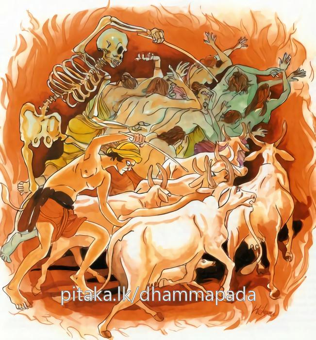

10-5 කම් සැප පතා සිල්ගත් උපාසිකාවෝ
මෙම කතාව ධම්මපද අටුවාවෙන් ද කියවන්න.
යථා දණ්ඩෙන ගොපාලො ගාවො පාචෙති ගොචරං
එවං ජරා ච මච්චු ච ආයුං පාචෙන්ති පාණිනං.
යම්සේ ගොපලු තෙම දඬුයෙන් (පැහැරැ පැහැරැ) ගෙරින් ගෝචර භූමියට (හෙවත් තණබිමට) පමුණුවා ද (ගෙනැ යේ ද), එ පරිද්දෙන් ම (ප්රකට ජරා ද අප්රකට ජරා ද යන ද්විවිධ) ජරා ද, (සන්තති විච්ජෙද යන) මරණ ද (යන මොහු දෙදෙන) ප්රාණීන්ගේ ජිවිතේන්ද්රියය ක්ෂයයට පමුණුවන්නාහු ය.

සැවැත්නුවර වැසි බොහෝ ගණනක් ස්ත්රීහු මහාපොහොය දිනයෙහිම පෙහෙවස් සමාදන් ව වෙහෙරට ගියහ. එහි දී විශාඛාවෝ ඒ උපාසිකාවන් අතර හුන් වැඩි මැහැලි උපාසිකාවන් වෙතට ගොස් “මෑනියෙනි! කුමක් පතා තෙපි පෙහෙවස් ගත්තහු දැ?” යි ඇසූහ. එවිට ඒ මැහැලි උපාසිකාවෝ “දිවසැප ලැබීමේ බලාපොරොත්තුවෙන් පෙහෙ වූම්හ” යි කීහ. අනතුරුව විශාඛා තොමෝ මැදියම් වයසෙහි සිටි උපාසිකාවන් වෙත ගොස් එසේ ම ඇසූ ය. “සපත්නීවාසයෙන් මිදෙන්නට පෙහෙ වූම්හ” යි ඈලා කීහ. නැවත තරුණ වයසෙහි සිටි උපාසිකාවන් වෙත ගොස් එසේ ඇසූ විට “කුලඳුලේ පුතුන් ලබන්නට පෙහ වූම්හ” යි ඈලා පිළිතුරු දුන්හ. ඒ වර විශාඛා තොමෝ ලදැරි උවැසියන් අතින් ද එය ම ඇසූ ය. “අපි පෙහෙවස් වසන්නමෝ වැඩි වියට නො ගොස් බාල කාලයේ දී ම දීග කන්නටැ” යි ඔවුහු කීහ. එවිට විශාඛා තොමෝ උන් හැම දෙන කැඳවා ගෙණ බුදුරජුන් ඉදිරියට ගොස් මේ සියලු පුවත් උන්වහන්සේට දන්වා සිටියා ය. බුදුරජානන් වහන්සේ ඒ අසා “විශාඛාව! සත්ත්වයන්ගේ ජාති ආදීහු, කෙවිටි දඬු ගත් එඩේරුන් වැන්නාහ, ජාතිය, සත්ත්වයන් ජරාව කරා පමුණුවයි, ජරාව, ව්යාධිය කරා පමුණුවයි, ව්යාධිය මරණය කරා පමුණුවා, පොරවෙන් කපන්නා සේ ජීවිතය සිඳලයි, තතු මෙසේ වූවත් මේ සත්ත්ව නිකායයෙහි නිවන් පතන්නෝ නැත, ඇත්තාහු සසර ම පතන්නෝ ය” යි වදාරා අනුසන්ධි ගලපා මේ ධර්මදේශනාව කළ සේක;
යථා දණ්ඩෙන ගොපාලො ගාවො පාජෙති [1] ගොචරං,
එවං ජරා ච මච්චු ච ආයුංපාජෙන්තී පාණිනන්ති.
ගොපලු තෙමේ දණ්ඩෙන් (තළතළා) ගෙරිසරක් තණ බිමට පමුණුවන්නා සේ ජරාවත් මරණයත් සත්ත්වයන්ගේ ආයුෂය ක්ෂයට පමුණුවත්.
යථා දණ්ඩෙන ගොපාලො ගාවො පාජෙති ගොචරං = එඩේරා කෙවිටෙන් තළතළා ගෙරින් තණබිමට පමුණුවන්නා සේ.
ගොපාලො යනු හරක් එඩේරාට නමෙකි. ගෙරිරැක්මෙහි දක්ෂ වූ එඩේරකු කෙරෙහි පිහිටිය යුතු අංග එකොළසෙක් ආගම ධර්මයෙහි දැක්වෙන්නේ ය. ඒ අංග එකොළසින් යුත් එඩේර තෙමේ ම ගොගණපරිහරණයටත් ගොගසමූහයාගේ දියුණුව සිදු කිරිමටත් සුදුසු ය. එසේ යුක්ත නො වූයේ නාමමාත්රයෙන් ගොපල් ය. මේ ය ඒ අඞ්ග එකොළොස. ගොනුන්ගේ ස්වරූප දන්නකු වීම, ගොනුන්ගේ සිරුරෙහි කළ ලකුණු දන්නකු වීම, නීල මැස්සන් තැබූ ඉහඳ ඉවත් කරන්නකු වීම, බෙහෙත් දී වණ බඳින්නකු වීම, සුදුසු කාලයෙහි ගොවුදෙහි දුම් දෙන්නකු වීම, සම විසම ගං තොටුපල දන්නකු වීම, ගොනුන් පැන් පානය කළ නො කළ බව දන්නකු වීම, මග සම විසමකම් දන්නකු වීම, ගොවරයෙහි දක්ෂයකු වීම, ඉතිරි කොට දොවන්නකු වීම, ප්රධාන ගවයන්ට වැඩි සැලකිලි කරන්නකු වීම, මෙ කී අගයන්ගෙන් යුත් ගොපලු තෙමේ ම ගවපට්ටි දියුණු කොට පස්ගෝරස වැළඳීමෙහි සමර්ත්ථ වන්නේ ය.
ගාවො යනු ගො යන්නෙන් විභක්ති ගෙණ නිපන්නේ ය. ගො යනු ‘ ගොසු දුය්හමානාසු ගතො’ යන මෙහි පශුවාවක ය. ‘ගොමතිං ගොතමං නමෙ’ යන මෙහි පෘථිවිවාවක ය. ‘ගොත්තවසෙන ගොතමං’ යන මෙහි වාචායෙහි ය. ‘ ගන්ධබ්බො’ යන මෙහි ස්වර්ගයෙහි ය. ‘ උණ්හගු සීතගු’ යන මෙහි රශ්මි වාචක ව සිටියේ ය. උණ්හගු නම් සූර්ය්යයා ය. සීතගු නම් චන්ද්රයා ය. ‘උණාහා ගාවො රංසයො එතස්සාති = උණ්හගු, සීතා සීතලා ගාවො රංසයො එතස්සාති = සීතගු’ යනු අර්ත්ථසමර්ත්ථනය යි. ‘ගදා’ යන මෙහි වජ්රවාචක වේ. ‘ගො විය වජිරො විය පරෙසං දුක්ඛං දදාතීති = ගදා’ යනු වාක්යයි. ‘ගො සීතචන්දනං’ යන මෙහි ජලාවාචක වේ. ‘ගො විය උදකං විය සීත චන්දනන්ති = ගොසීතචන්දනං’ යනු වාක්ය ය යි. ‘ ගොචරො’ යනු චක්ෂුරාදි ඉන්ද්රිය වාචක ය. වාක්යය ‘ ගාවො ඉන්ද්රියානි චරන්ති එත්ථාති = ගොචරො’ යනු යි. ‘ ශණ්ඨීපදං’ යන තැන්හි ඤාණවාචක ය. ‘ගො ඤාණං තිට්ඨති එත්ථාති = ගණ්ඨී, ගණ්ඨී ච තං පදං චාති = ගණ්ඨීපදං’ යනු දන්න. ‘ ගීතං ගායනං’ යනාදියෙහි ගායනා කරන්නහු කෙරෙහි වැටේ. ‘ගොහි ගීතරෙහි ඊයතෙ උච්චාරීයතෙති ගීතං’ යනු වාක්යය යි. මේ ආදී විසින් නානාර්ත්ථවාචක වූ ගො ශබ්දය මෙහිලා සිටියේ පශුවාචක ව ය.
ගවයන් තණ පිණිස හැසිරෙණ බිම් පෙදෙස් මෙහි ගෝචර නම් වේ. භික්ෂුන් පිඬු සිඟා හැසිරෙණ ගම් ද ගෝචරෑ යි කියනු ලැබේ. ‘ ගොචරොති භික්ඛාචාරගාමො’ යනු ටීකා ය. පිණ්ඩපාතාදිය පිණිස එළඹෙන්නට සුදුසු තැන ය ගෝචර නම්. ‘ගොචරොති ච පිණ්ඩපාතාදීනං අත්ථාය උපසඞ්කමිතුං යුත්තට්ඨානං’ යනු පොතෙහි ඒ ආ සැටියි.
තව ද ආගම පිළිබඳ පොතපතෙහි උපනිස්සයගොචර - ආරක්ඛගොචර - උපනිබන්ධගොචර යි ගෝචර තුණක් ආයේ ය. එහි කල්යාණමිත්ර තෙමේ උපනිස්සයගෝචර නම්. අප්පිච්ඡකථා ආදී දශකථාවස්තූන්ට ස්ථාන බැවිනි. ඉන්ද්රියසංවරය ආරක්ඛගෝචර නම්. සතර සතිපට්ඨානය උපනිබන්ධ ගෝචර නම්. එසේ කියනුයේ සතර සතිපට්ඨානය සිත බැඳ තැබීමට සිත හැසිරවීමට තැන් වන බැවිනි. මේ එකකුදු මෙහි නො ගැණේ. ගැණෙන්නේ ගවයන් තණ කා හැසිරෙන තැන ය.
එවං ජරා ච මච්වූ ච = එසේ ජරාවත් මරණයත්.
ආයු පාජෙන්ති පාණිනං = සත්ත්වයන්ගේ ආයුෂය (විනාශයට) පමුණුවන්නාහ.
දක්ෂ වූ ගොපලු, කුඹුරු වතුපිටිවලට වදින්නා වූ ගෙරිසරක්, කෙවිටෙන් පහරමින්, ඉන් වළකා, තණ දිය ඇති බිම්පදෙස් කරා ගෙණ යන්නා සේ ජරාමරණ යන මොවුහු සත්ත්වයන්ගේ ජීවිතය සිඳ ලන්නෝ ය.
මෙහි ජරාමරණ, එඩේරා සේ, ජීවිතය, ගොනුන් සේ, මරණය තණ බිම සේ දත යුතු ය. ජාතිය, සත්ත්වයන්ගේ ජීවිතය ජරාව වෙතට පමුණුවයි. ජරාව, ව්යාධිය වෙතට, ව්යාධිය, මරණය වෙතට පමුණුවයි. මරණයෙන් ඒ භවයෙහි ජීවිතෙන්ද්රියයාගේ පැවැත්ම අවසන් වන්නේ ය. ජරාමරණ ඉදිරියෙහි විස්තර වන්නේ ය.
ආයු නම් ජීවිතකාල ය යි. ‘එති ගච්ඡතීති = ආයු’ යනු නිරුක්ති යි. ඇතැම් සත්ත්වයන් පිළිබඳ ආයුකාලය සීමිත වුව ද මනුෂ්යතිරශ්චිනාදී ඇතැම් සත්ත්වයන් පිළිබඳ ආයුෂයාගේ සීමා නියමයෙක් ඒකාන්ත විසින් නො දැක්විය හැකි ය.
ලෝකයෙහි මනුෂ්යයන්ගේ ආදීම මහාපුරුෂයෝ දෙවත්වය පවා ඉක්මවා සිටියෝ අසඞ්ඛ්යායුස්ක වූහ. මොවුන්ගේ ඒ ඉතා දීර්ඝ වූ ආයු කාලය ගෙවා ලූවෝ ද ජරාමරණයෝ ය. දීර්ඝායුස්ක වූ ඒ මිනිසුන් අතර කල් යෑමෙන් විවිධ දුර්ගුණ පහළ විය. ඒ හේතුවෙන් මිනිසුන්ගේ දිගු කලක් ජීවත්වීමේ ශක්තිය ක්රමයෙන් පිරිහෙන්නට වන. එය, “ඉමෙසු සබ්බෙසු වෙපුල්ලං ගතෙසු තෙසං සත්තානං ආයුපි පරිහායි, වණ්ණොපි පරිහායි” යනාදී දේශනා ප්රදේශයන්ගෙන් පැහැදිලි වේ. මෙසේ පැවැත ආ මිනිසුන්ගේ ආයුකාලය, බුදුරජානන් වහන්සේ දවස සියක් වසට ඉතා ටිකක් අඩු වැඩි බවට පැමිණියේ ය. “අප්පමිදං භික්ඛවෙ! මනුස්සානං ආයු, ගමනීයො සම්පරායො, කත්තබ්බං කුසලං, චරිතබ්බං බ්රහ්මචරියං, නත්ථි ජාතස්ස අමරණං, යො භික්ඛවෙ! චිරං ජීවති සො වස්සසතං අප්පං වා භීය්යො” යනාදී දේශනාවෙන් ඒ බව කියන්නාහ.
අද මනුෂ්යයාගේ ජීවිතකාලය සියක් වසිනුදු ප්රමාණවත් කරන්නට නො හැකි ය. පමණ කට හැක්කේ සැට වසකට හෝ සැත්තෑ වසකට ය. එහි හේතු පෙර කී සේ මිනිසුන් අතර අසද්ගුණ බහුල වශයෙන් පහළ වීම ය. අසද්ගුණ පහළවීම ආයු පිරිහීමට කරුණු වන්නා සේ ආරෝහපරිණාහසම්පත්ත්යාදිය පිරිහීමට ද හේතු වේ.
ඒ ඒ කාලයගේ වශයෙන් අඩු වැඩි වන සත්ත්වයන්ගේ ඒ ඒ අත්බව් පිළිබඳ ජීවිතකාලය, ජීවිතේන්ද්රියය, ජරාමරණ විසින් ම විනාශයට පමුණු වනු ලැබේ. එය වළකනු බැරි ය. ලෝකයට ඇතුළත් බැවිනි.
පාණ නම් ජීවිතේන්ද්රිය ය. ඒ මේ ජීවිතෙන්ද්රියය යමෙකුට වේ නම් ඔහු පාණි යි ගණු ලැබේ. පරමාර්ත්ථ විසින් ප්රාණියෙක් නැත. ව්යවහාරයෙහි නම් ලැබේ. ‘පාණොති ජීවිතින්ද්රියං වොහාර මත්තතො සත්තො’ යනු අටුවා ය. ‘පාණොති ජීවිතින්ද්රියපටිබද්ධා ඛන්ධසන්තති, තං වා උපාදාය පඤ්ඤත්තො සත්තො’ යන මෙයිනුදු එය තහවුරු කෙරෙත්. ජීවිතේන්ද්රිය ප්රතිබද්ධ වූ ස්කන්ධ සන්තතිය ප්රාණි යි කියනු ලබන්නී ය. සත්ත්ව ව්යවහාරයට එය ඇසුරු කොට නැගුනෙකි.
ධර්මදේශනාවගේ අවසානයෙහි බොහෝ දෙන සෝවාන්ඵලාදියට පැමිණියෝ ය.
විශාඛාදි උපාසිකාවන්ගේ පෙහෙවස්කම් පිළිබඳ වස්තුව නිමි.
-
‘පචෙති’ යි සමහර පොත්හි. ↑